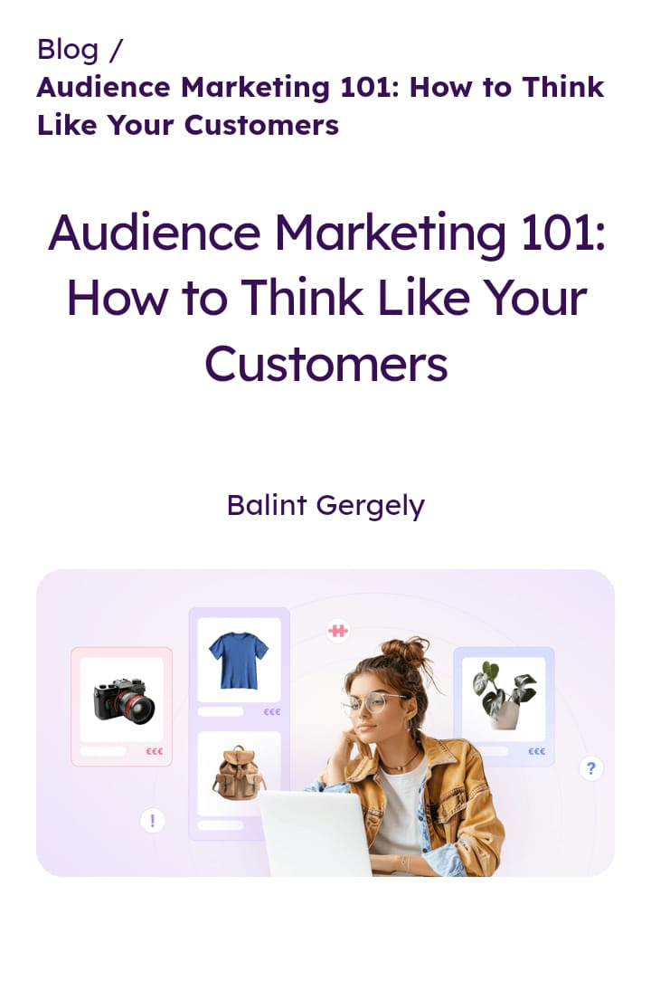

Social marketing means presenting and peddling some commodity while making the target ultimately feel as though they must buy it. This is marketing, and there is a way to do it. There are different ways of marketing, and there is someone who has mastered these marketing tactics. That somebody is a marketer. Marketing is a learned ability that aids in enabling people to market their products effectively.
There are many social media platforms where we can do marketing. These platforms includes Tiktok, Instagram, Facebook and Youtube. These platforms attract a large number of customers. It is common for marketers to subcontract some professionals to assist in advertising their goods and pay them a fee. One of the standard strategies is using Meta ads which include Instagram Ads, Facebook Ads, and Messenger Ads. These social networks use their users’ preferences to display these ads and show them products that might be of interest to them.
Social marketing was founded by Andrew Weinreich in 2002.